ArleingNgarSintPagoda/YANGON
アーレインガーシンパゴダ
首都ヤンゴンの長距離バスセンター近くにある素敵なパゴダ。
どこの国の様式を模したものなのか良く分からない八角の塔や怪し気な仏像が並ぶ。
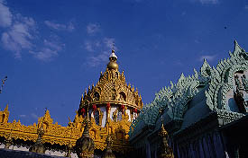 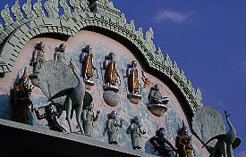
メインの仏塔の外観。正面入口の素敵過ぎるレリーフ。
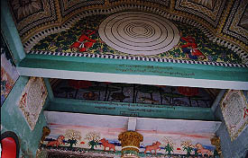
派っ手〜な装飾の内部。上を向くとこんなっす。
ただれたファンシー指向は世界のファンシー界の脅威ですらある。
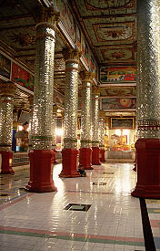 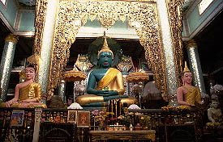
で、前を見れば本尊はなんと緑色の大仏さん。
これは相当奇妙です。笑えます。なんで、緑なの？
で、周りにはズラリと仏像が。やっぱり都会のパゴダは金かかってますな〜
さらにこの仏塔を囲むように小仏塔と螺旋階段の展望台が四隅にそびえる。しかもその小仏塔と展望台にいくには迷路を通って行かなければならないのだ。つまりここの仏塔は四方を迷路に囲まれていたのである。
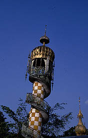 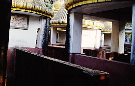
残念ながら迷路の方は鍵がかかっていて入れなかった。尤もしばらく人が入った様子は無い。やっぱ迷子続出で入場禁止になっちゃったんだろうか？
それにしてもバガンのシュエジゴンパゴダ、ピンダヤ洞窟など、この国ではお寺に迷路という組み合わせは珍しくないのだろうか。
さらに迷路の周りにもお笑いスポット続出。素敵なファッションの王子様軍団、何故か象に乗っている王子様、馬にまたがる王子様等々。境内にはファンシーな王子様で溢れかえっている。
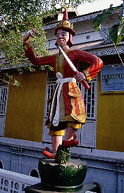 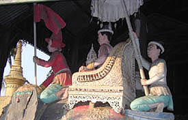 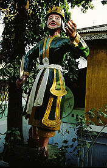
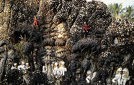また小石のモザイクレリーフもマッド具合を増長させている。
で、奥にある謎の八角の塔へ。ここも入口に鍵がかかっていて入れませんでした。
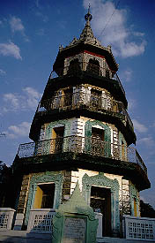 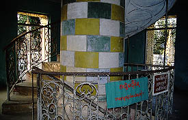
中を覗くと中央に単螺旋の階段。それにしてもファンシーな色使いだ。
お、地下に行く階段も見えるぞ、気になる〜
緑の大仏、ファンシーな塔、王子様軍団、センスオブミャンマーからもかけ離れた独自の路線を爆走するあっぱれなパゴダであった。
も一つ行きましょう
ミャンマーパゴダ列伝２のページへ
珍寺大道場 HOME